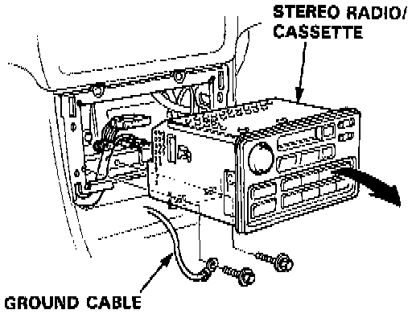

Dash Component Removal and Installation

NOTE: SRS wire harnesses are routed near the steering column and the passenger's side of the dashboard.
CAUTION:
- All SRS wiring harnesses are covered with yellow outer insulation.
- Before disconnecting any part of the SRS wire harness, turn the ignition switch off, disconnect the negative and positive battery cables (L and LS models: get the anti-theft radio code number!), wait for at least three minutes, and install the short connectors.
- Replace the entire affected SRS harness assembly if it has an open circuit or damaged wiring.
Instrument Panel And Vents:

Glove Box And Lower Panel:

Driver's Side Components:

DASH COMPONENT REMOVAL / INSTALLATION
- Refer to images for dash component removal details.
- Disassemble in numbered sequence, as shown.
- Take care not to scratch or score the dashboard, center console or steering column.
- Installation is the reverse of the removal procedure.
STEREO RADIO/CASSETTE REPLACEMENT
NOTE (L and LS models): These versions have a stereo radio/cassette player with a 5-digit coded theft protection circuit. Be sure to get ihe code number before:
- disconnecting the battery.
- removing the No. 56 (7.5 A) fuse.
- removing the radio.
After reconnecting power and turning the radio ON, the word "CODE" will be displayed. Then enter the code.
1. Remove the center console panel.

2. Remove the 2 mounting bolts, then disconnect the ground cable. Remove the stereo radio/cassette by pulling it out of the console.
NOTE:
- Do not drop the bolts inside the dashboard.
- Take care not to scratch the console and dashboard.
- When prying with a flat tip screwdriver, wrap it with protective tape to prevent damage.
3. Disconnect the connectors.
4. Installation is the reverse of the removal procedure.
NOTE: Before tightening the mounting bolts, make sure the harnesses are not pinched.